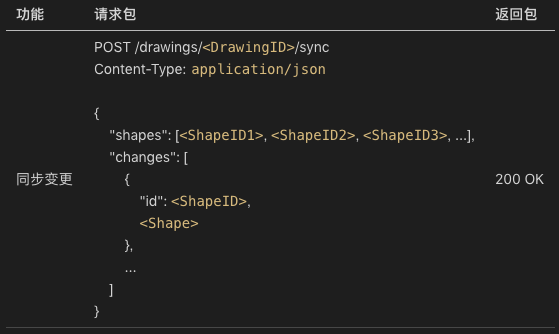
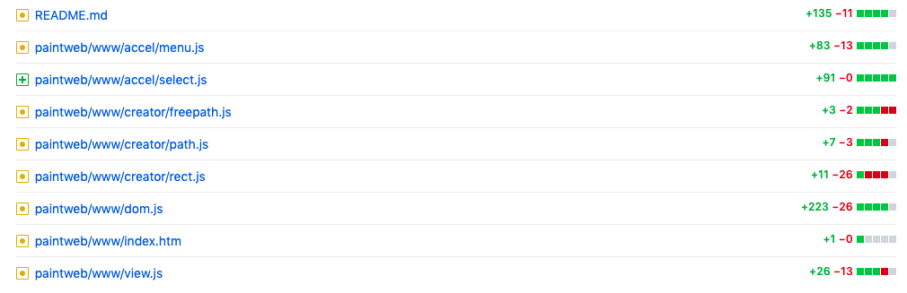
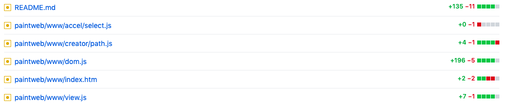
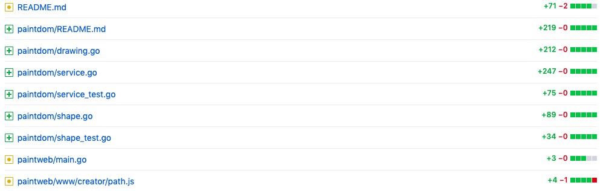
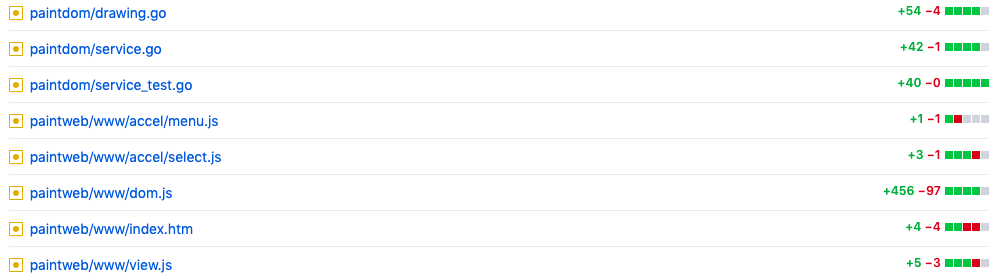

- 00 开篇词 怎样成长为优秀的软件架构师？.md
- 01 架构设计的宏观视角.md
- 02 大厦基石：无生有，有生万物.md
- 03 汇编：编程语言的诞生.md
- 04 编程语言的进化.md
- 05 思考题解读：如何实现可自我迭代的计算机？.md
- 06 操作系统进场.md
- 07 软件运行机制及内存管理.md
- 08 操作系统内核与编程接口.md
- 09 外存管理与文件系统.md
- 10 输入和输出设备：交互的演进.md
- 11 多任务：进程、线程与协程.md
- 12 进程内协同：同步、互斥与通讯.md
- 13 进程间的同步互斥、资源共享与通讯.md
- 14 IP 网络：连接世界的桥梁.md
- 15 可编程的互联网世界.md
- 16 安全管理：数字世界的守护.md
- 17 架构：需求分析 (上).md
- 18 架构：需求分析 (下) · 实战案例.md
- 19 基础平台篇：回顾与总结.md
- 20 桌面开发的宏观视角.md
- 21 图形界面程序的框架.md
- 22 桌面程序的架构建议.md
- 23 Web开发：浏览器、小程序与PWA.md
- 24 跨平台与 Web 开发的建议.md
- 25 桌面开发的未来.md
- 26 实战（一）：怎么设计一个“画图”程序？.md
- 27 实战（二）：怎么设计一个“画图”程序？.md
- 28 实战（三）：怎么设计一个“画图”程序？.md
- 29 实战（四）：怎么设计一个“画图”程序？.md
- 30 实战（五）：怎么设计一个“画图”程序？.md
- 31 辅助界面元素的架构设计.md
- 32 架构：系统的概要设计.md
- 33 桌面开发篇：回顾与总结.md
- 34 服务端开发的宏观视角.md
- 35 流量调度与负载均衡.md
- 36 业务状态与存储中间件.md
- 37 键值存储与数据库.md
- 38 文件系统与对象存储.md
- 39 存储与缓存.md
- 40 服务端的业务架构建议.md
- 41 实战（一）：“画图”程序后端实战.md
- 42 实战（二）：“画图”程序后端实战.md
- 43 实战（三）：“画图”程序后端实战.md
- 44 实战（四）：“画图”程序后端实战.md
- 45 架构：怎么做详细设计？.md
- 46 服务端开发篇：回顾与总结.md
- 47 服务治理的宏观视角.md
- 48 事务与工程：什么是工程师思维？.md
- 49 发布、升级与版本管理.md
- 50 日志、监控与报警.md
- 51 故障域与故障预案.md
- 52 故障排查与根因分析.md
- 53 过载保护与容量规划.md
- 54 业务的可支持性与持续运营.md
- 55 云计算、容器革命与服务端的未来.md
- 56 服务治理篇：回顾与总结.md
- 57 心性：架构师的修炼之道.md
- 58 如何判断架构设计的优劣？.md
- 59 少谈点框架，多谈点业务.md
- 60 架构分解：边界，不断重新审视边界.md
- 61 全局性功能的架构设计.md
- 62 重新认识开闭原则 (OCP).md
- 63 接口设计的准则.md
- 64 不断完善的架构范式.md
- 65 架构范式：文本处理.md
- 66 架构老化与重构.md
- 67 架构思维篇：回顾与总结.md
- 68 软件工程的宏观视角.md
- 69 团队的共识管理.md
- 70 怎么写设计文档？.md
- 71 如何阅读别人的代码？.md
- 72 发布单元与版本管理.md
- 73 软件质量管理：单元测试、持续构建与发布.md
- 74 开源、云服务与外包管理.md
- 75 软件版本迭代的规划.md
- 76 软件工程的未来.md
- 77 软件工程篇：回顾与总结.md
- 加餐 如何做HTTP服务的测试？.md
- 加餐 实战：“画图程序” 的整体架构.md
- 加餐 怎么保障发布的效率与质量？.md
- 热点观察 我看Facebook发币（上）：区块链、比特币与Libra币.md
- 热点观察 我看Facebook发币（下）：深入浅出理解 Libra 币.md
- 用户故事 站在更高的视角看架构.md
- 答疑解惑 想当架构师，我需要成为“全才”吗？.md
- 结束语 放下技术人的身段，用极限思维提升架构能力.md
- 课外阅读 从《孙子兵法》看底层的自然法则.md
30 实战（五）：怎么设计一个“画图”程序？
30 实战（五）：怎么设计一个“画图”程序？你好，我是七牛云许式伟。
我们继续聊我们的话题。这是画图程序的最后一讲了。当然我们后续还会结合这个实战程序展开讨论有关于架构的方方面面。
宏观的系统架构
上一讲开始，我们的画图程序有了跨团队协作：因为我们开始有了 paintdom 和 paintweb 两大软件。paintdom 监听的地址是 localhost:9999，而 paintweb 监听的地址是 localhost:8888。
应当注意，在实际业务中它们是不同的软件，事实上我们 paintweb 程序也完全是以进程间协作的方式，通过反向代理机制来调用 paintdom 的功能。但是在我们这个画图 DEMO 程序中，它们同属一个进程，paintdom 作为 paintweb 的一个 goroutine 在跑。这纯粹是因为我们想让这两个程序 “同生共死”，方便调试的时候起停进程。
paintdom 和 paintweb 之间相互协作的基础，是它们之间所采用的网络协议。
当我们说起网络协议，它其实通常包含两个层面的意思：其一是我们网络协议的载体，也就是协议栈（我们这里采纳的是 HTTP 协议，而 HTTP 协议又基于 TCP/IP 协议）；其二是我们网络协议承载的业务逻辑。
当我们谈架构的时候，也会同时聊这两个层面，只是它们在不同的维度。我们会关心网络协议的协议栈选择什么，是基于 HTTP 还是基于自定义的二进制协议，这个是属于基础架构的维度。我们也会关心网络协议的业务逻辑，判断它是否自然体现业务需求，这是属于应用架构的维度。
明确了网络协议后，我们实现了 Mock 版本的服务端程序 paintdom。在实际项目中，Mock 程序往往会大幅提速团队的开发效率。这是因为它能够达到如下两个大的核心目标：
- 让团队的研发迭代并行，彼此可以独立演进。
- 及早验证网络协议的合理性，在实战中达到用最短时间稳定协议的目的。
上一讲我们的 paintdom 和 paintweb 之间虽然定义了网络协议，并且实现了第一版，但是并没有去做两者的对接。
今天我们就来对接它们。
虽然 paintweb 没有对接服务端，但从文档编辑的角度来说，它的功能是非常完整的。我们对接 paintdom 和 paintweb 的目的不是加编辑功能，而是让文档可以存储到服务端，以便于人们在世界任何可以联网的角落都可以打开它。
当然严谨来说，说 paintweb 没有服务端是不正确的，paintweb 本身是一个 B/S 结构，它有它自己的服务端。如下：
var wwwServer = http.FileServer(http.Dir("www"))
func handleDefault(w http.ResponseWriter, req *http.Request) {
if req.URL.Path == "/" {
http.ServeFile(w, req, "www/index.htm")
return
}
req.URL.RawQuery = "" // skip "?params"
wwwServer.ServeHTTP(w, req)
}
func main() {
http.HandleFunc("/", handleDefault)
http.ListenAndServe(":8888", nil)
}
可以看出，paintweb 自己的服务端基本上没干什么事情，就是一个非常普通的静态文件下载服务器，提供给浏览器端下载 HTML + CSS + JavaScript 等内容。
所以 paintweb 的服务端完全是“平庸”的，与业务无关。具体的业务，都是通过 www 目录里面的文件来做到的。这些文件都是前端的浏览器端所依赖的，只不过被 “托管” 到 paintweb 服务端而已。
那么 paintweb 怎么对接 paintdom 呢？
物理上的对接比较简单，只是个反向代理服务器而已，代码如下：
func newReverseProxy(baseURL string) *httputil.ReverseProxy {
rpURL, _ := url.Parse(baseURL)
return httputil.NewSingleHostReverseProxy(rpURL)
}
var apiReverseProxy = newReverseProxy("http://localhost:9999")
func main() {
http.Handle("/api/", http.StripPrefix("/api/", apiReverseProxy))
}
可以看出，paintweb 的服务端干的事情仍然是 “平庸” 的，只是把发往 http://localhost:8888/api/xxx 的请求，原封不动地发往 http://localhost:9999/xxx 而已。
在现实中，paintweb 的服务端干的事情稍微复杂一些。它背后不只是有业务服务器 paintdom，还有必不可少的帐号服务器（Account Service），用来支持用户登录/登出。
帐号服务器是一个基础架构类的服务，与业务无关。公司很可能不只有 QPaint 这样一个业务，还会有别的，但这些业务可以共享相同的帐号服务。更准确地说，是必须共享相同的帐号服务，否则一个公司弄出好多套独立的帐号体系来，用户也会有所诟病。
在需要对接帐号服务器的情况下，实际上 paintweb 的服务端并不是原封不动地转发业务请求，而是会对协议进行转义。
在 “24 | 跨平台与 Web 开发的建议”这一讲中我们提到过：
到了 Web 开发，我们同样需要二次开发接口，只不过这个二次开发接口不再是在 Client 端完成的，而是在 Server 端完成。Server 端支持直接的 API 调用，以支持自动化（Automation）方面的需求。
所以，对 Server 端来说，最底层的是一个多租户的 Model 层（Multi-User Model），它实现了自动化（Automation）所需的 API。
在 Multi-User Model 层之上，有一个 Web 层。Web 层和 Model 层的假设不同，Web 层是基于会话的（Session-based），因为它负责用户的接入，每个用户登录后，会形成一个个会话（Session）。
如果我们对Web 层细究的话，又分为 Model 层和 ViewModel 层。为了区分，Web 这边的 Model 层我们叫它 Session-based Model。相应地，ViewModel 层我们叫它 Session-based ViewModel。
在服务端，Session-based Model 和 Session-based ViewModel 并不发生直接关联，它们通过自己网络遥控浏览器这一侧的 Model 和 ViewModel，从而响应用户的交互。
Session-based Model 是什么样的呢？它其实是 Multi-User Model 层的转译。把多租户的 API 转译成单租户的场景。所以这一层并不需要太多的代码，甚至理论上自动实现也是有可能的。
Session-based ViewModel 是一些 HTML+JavaScript+CSS 文件。它是真正的 Web 业务入口。它通过互联网把自己的数据返回给浏览器，浏览器基于 ViewModel 渲染出View，这样整个系统就运转起来了。
这段话说的比较抽象，但结合 QPaint 这个实际的例子，就非常明朗了：
- paintdom 就是这里说的 Multi-User Model 层，负责多租户的业务服务器。
- paintweb 服务端实现 Session-based Model 层，负责 Session-based 到 Multi-User 的转译。由于我们当前这个例子还不支持多租户，转译就变成了简单的转发。后面我们在 “服务端开发” 一节中会给大家看实际的转译层是怎么做的。
所以你可以看到，其实 paintweb 自身的服务端是业务无关的。它做这样一些事情：
- Web 前端文件的托管（作为静态文件下载服务器）；
- 支持帐号服务，实现 Web 的用户登录；
- 做业务协议的转译，将 Session-based 的 API 请求转为 Multi-User 的 API 请求。
当然，我们这里假设 Web 自身的业务逻辑都是通过 JavaScript 来实现的。这意味着我们是基于 “胖前端” 模式的。
但这并不一定符合事实，有些公司会基于 “胖后端” 模式。这意味着大部分的前端用户行为，都是由后端支持的，比如我们用 PHP 来实现 Web 后端的业务代码。
胖后端模式的好处是 Web 代码比较安全。这里的 “安全” 是指 IT 资产保全方面的安全，不是指业务存在安全问题，因为别人看不到完整的 Web 业务逻辑代码。
但是胖后端模式的缺点是没办法支持离线。大部分的用户交互都需要 Web 后端来响应，一旦断了网就什么都干不了了。
在 “胖后端” 模式下，我个人会倾向于基于类似 PHP 这种胶水语言来实现 Web 后端的业务代码。而一旦我们这么做，paintweb 的业务逻辑就被剥离了，paintweb 自身的后端仍然是业务无关的，只是多了一个职责：支持 PHP 脚本语言。
真正 Web 后端业务逻辑，还是放在了 www 目录中，以 PHP 文件存在，这些文件就不是简单的静态资源，而是 “胖后端” 的业务代码。
既然 paintweb 后端是 “平庸” 的，与业务无关，那么整个业务逻辑的串联，靠的就是 www 里面的 js 文件，和 paintdom 提供的 API 接口。
上面我们说过，在连接 paintdom 之前，paintweb 程序独立看是完整的，它支持离线创建、编辑以及存储文档到浏览器本地的 localStorage 上。
对接 paintdom 与 paintweb 后我们并不会放弃离线编辑的能力，而是要能够做到：
- 在断网情况下，表现为上一讲我们达到的效果，可以继续离线编辑和保存；
- 一旦联网，所有离线编辑的内容可以自动保存到 paintdom 服务器。
计算变更
听起来挺简单一件事情？
其实很复杂。第一件要做的事情是：怎么知道断网后离线编辑过的内容有哪些？
思路一是不管三七二十一，每次都完整保存整篇文档。这很浪费，因为不单单刚恢复联网的时候我们需要保存文档，平常每一次编辑操作我们也都会自动保存修改的内容。
思路二是记录完整的编辑操作历史，每做一个编辑操作都将其记录到 localStorage。这个思路看似会更节约，但是实际上在很多情况下会更浪费。原因在于：
- 一个对象编辑多次，会有很多条编辑操作的指令要保存；
- 断网久了，编辑操作累计下来，其存储空间甚至可能超过文档大小。
所以这种方案缺乏很好的鲁棒性，在 badcase 情况下让人难以接受。
思路三是给对象增加版本号。通过对比整个文档的基版本（baseVer，即上一次同步完成时的版本），与某个对象的版本 ver。如果 ver > baseVer，说明上一次同步完成后，该对象发生了变更。完整的变更信息的计算逻辑如下：
prepareSync(baseVer) {
let shapeIDs = []
let changes = []
let shapes = this._shapes
for (let i in shapes) {
let shape = shapes[i]
if (shape.ver > baseVer) {
changes.push(shape)
}
shapeIDs.push(shape.id)
}
let result = {
shapes: shapeIDs,
changes: changes,
ver: this.ver
}
this.ver++
return result
}
同步变更
有了变更的信息，怎么同步给服务端？
一个可能的思路是把变更还原为一条条编辑操作发给服务端。但是，这样做问题会很复杂，因为这些编辑操作一部分发送成功，一部分发送失败怎么办？
这种部分成功的中间态是最挑战我们程序员的编程水平的，很烧脑。
我个人一贯坚持的架构准则是不要烧脑。尤其对大部分非性能敏感的业务代码，简单易于实施为第一原则。
所以我们选择了修改网络协议。增加了同步接口：

这很有趣。在我们讨论相互配合的接口时，我们非常尊重业务逻辑，按照我们对业务的理解，定义了一系列的编辑操作。但是，到最后我们却发现，它们统统不管用，我们要的是一个同步协议。
是最初我们错了吗？
也不能这么说。最初我们定义协议的逻辑并没有错，只是没有考虑到支持离线编辑这样的需求而已。
复盘这件事情，我们可以这么说：
- 需求的预见性非常重要。如果我们没有充分预见到需求，大部分情况下就会因为我们缺乏市场洞察而买单；
- 进一步说明，及早推出 Mock，让前端可以快速迭代，进而及早去发现原先定义网络协议的不足是很有必要的。越晚做出协议调整，事情就越难，也越低效。
有了同步协议，我们就可以把变更信息同步给服务端了。这个事情我们交给了 QSynchronizer 类来完成（详细请看 dom.js#L204）。
加载文档
把变更详细推送给服务端后，理论上我们就可以在世界各地看到这篇文档。
怎么做到？
我们接下来就谈谈怎么来加载文档。这个过程的难点在于怎么根据服务端返回的 json 数据重建整个文档。
上一讲我们已经说过，我们图形（Shape）的网络协议中的数据格式，和 localStorage 中是不同的。这意味着我们需要做两套图形数据的加载工作。
这挺没有必要。
而且，从预测变更的角度，我们很容易预期的一个变化，就是画图程序支持的图形（Shape）的种类会越来越多。
这两个事情我们一起看。为此我们做了一次重构。重构目标是：
- 统一 localStorage 和网络协议中的图形表示；
- 增加新的图形种类要很容易，代码非常内聚，不必到处修改代码。
为此我们增加 qshapes: QSerializer 全局变量，允许各种图形类型注册自己的创建方法（creator）进去。示意代码如下：
qshapes.register("rect", function(json) {
return new QRect(json)
})
为了支持 QSerializer 类（代码参见 dom.js#L89），每个图形需要增加两个方法：
interface Shape {
constructor(json: Object)
toJSON(): Object
}
这样我们就可以调用 qshapes.create(json) 来创建一个图形实例。
有了这个能力，我们加载文档就水到渠成了，具体代码请参考 QPaintDoc 类的 _loadRemote(displayID) 方法（参见 dom.js#L690）。
完整来说，加载文档的场景分为这样三类：
- _loadBlank，即加载新文档。在联网情况下，会在服务端创建一个新 drawing。在非联网情况下，会本地创建一个临时文档（displayID 以 t 开头）。
- _loadTempDoc，即加载一个临时文档。即该文档从创建之初到目前，一直都处于离线编辑的状态。同样它也分两个情况，如果当前处于联网状态下，会在服务端创建一个新 drawing，并把当前的离线编辑的数据同步过去。如果在非联网的情况下，会加载离线编辑的数据，并可继续离线编辑。
- _loadRemote，即加载一个远程文档。该文档在本地有可能编辑过，那么会先加载本地缓存的离线编辑的数据。如果当前处于联网状态，会异步加载远程文档，成功后本地离线编辑的内容会被放弃。
另外，加载文档结束后，QPaintDoc 会发出 onload 消息。这个消息当前会被 QPaintView 响应，用来刷新界面，代码如下：
class QPaintView {
constructor() {
...
let view = this
this.doc.onload = function() {
view.invalidateRect(null)
}
...
}
}
之所以会有 onload 消息，是因为向服务器的 ajax 请求，什么时候完成是比较难预期的，我们加载文档是在异步 ajax 完成之后。这样来看，完成文档加载后发出 onload 事件，就可以避免 Model 层需要去理解 View 层的业务逻辑。
Model 层的厚度
介绍到这里，我们基本上把本次迭代的主体内容介绍清楚了。其他有些小细节的变动，我们不再赘述。详细的代码变更请参阅：
下面我想聊的话题是关于 Model 层的厚度问题。我们在 “22 | 桌面程序的架构建议” 中提到：
从界面编程角度看，Model 层越厚越好。为什么这么说？因为这是和操作系统的界面程序框架最为无关的部分，是最容易测试的部分，也同时是跨平台最容易的部分。我们把逻辑更多向 Model 层倾斜，那么 Controller 层就简洁很多，这对跨平台开发将极其有利。
我们秉承的理念是 Model 层越厚越好。事实上在这次 “画图” 程序实战中，我们在一直坚持这一点。让我们来观测两组数据。
其一，不同版本（v26..v30）的 Model 层（dom.js）对比：
Model 层的代码行翻了多少倍？7.x 倍。
其二，不同版本（v26..v30）的变更历史：
v27：https://github.com/qiniu/qpaint/compare/v26…v27

v28：https://github.com/qiniu/qpaint/compare/v27…v28

v29：https://github.com/qiniu/qpaint/compare/v28…v29

v30：https://github.com/qiniu/qpaint/compare/v29…v30

不知道你看出什么来了吗？
一个有趣的事实是，多个版本的迭代，基本上都是以变更 Model 层为多。v29 版本的变更看似比较例外，没有修改 dom.js。但是实际上 v29 整个变更都是 Model 层的变更，因为是增加了服务端的 Model（我们前面把它叫做 Multi-User Model）。
我们深刻思考这个问题的话，我们会有这样一个推论：
- 如果我们不是让 Model 层代码以内聚的方式放在一起，而是让它自由的散落于各处，那么我们的代码变更质量会非常不受控。
为什么？Model 层总体来说是最容易测试的，因为它的环境依赖最小。如果这些代码被分散到 View、Controller 层中，代码的阅读难度、维护难度、测试的难度都会大幅增加。
通过几轮的功能迭代，我们对 Model 层的认知在不断的加深。我们总结一下它的职责，如下：
- 业务逻辑，对外暴露业务接口。它也是 Model 的最本职的工作。
- 实现 View 层委托的 onpaint 事件，完成绘制功能。
- 实现 Controller 层的 hitTest 接口，用来实现 selection 支持。
- 实现与服务端 Multi-User Model 层的通讯，View、Controllers 组件都不需要感知服务端。
- 实现离线编辑 localStorage 的存取。
除了少量 View（onpaint）、Controllers（hitTest）的需求，大部分都是 Model 层的正常业务范畴。
这些职责已经很多，所以 Model 层自然会胖。
结语
今天我们完成了画图程序前后端 paintdom、paintweb 的对接。由于考虑支持离线编辑，对接工作有较大的复杂性，你如果不能理解，建议仔细对代码进行研读。当然后面我们还会掰开来细谈这个案例。
这是最新版本的源代码：
到这里我们的实战过程就先告一段落了。
如果你对今天的内容有什么思考与解读，欢迎给我留言，我们一起讨论。到现在为止，我们探讨的都是一个完整的桌面应用程序（可能是单机的，也可能是 B/S 结构的）的业务架构。
下一讲我们会谈谈辅助界面元素（自定义控件）的架构设计，它和应用程序的业务架构考虑的问题颇有不同。
话外：按照大纲，当前进度还只有 1⁄3 的内容。看起来我们最终会比原计划的 58 讲超出不少，可能要往 90 讲去了。关于这一点，我总体还是以说清楚事情为目标，在聊的过程会根据反馈作出适当的调整。
如果你觉得有所收获，也欢迎把文章分享给你的朋友。感谢你的收听，我们下期再见。
© 2019 - 2023 Liangliang Lee. Powered by gin and hexo-theme-book.